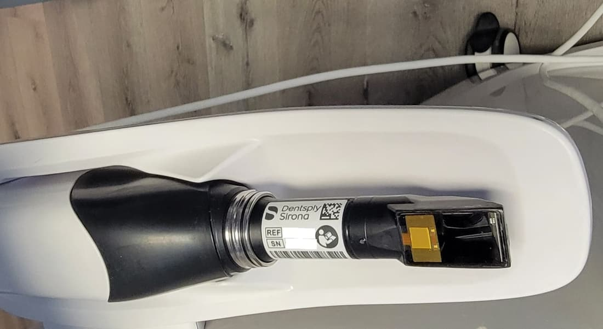
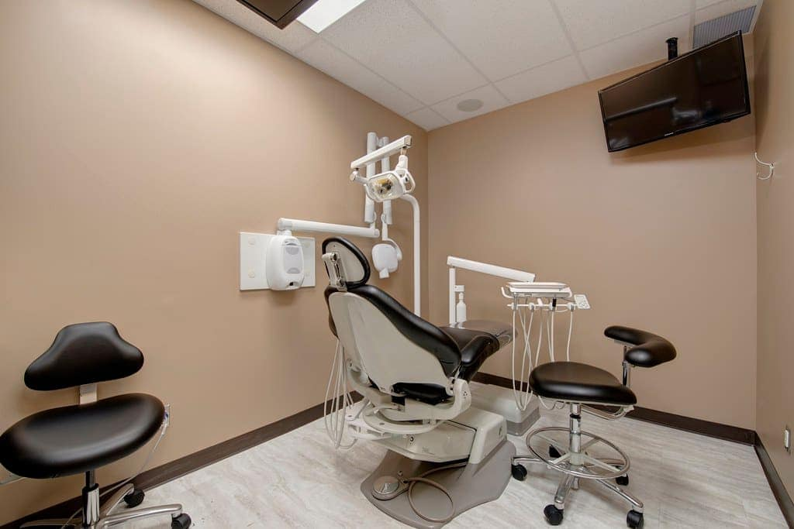
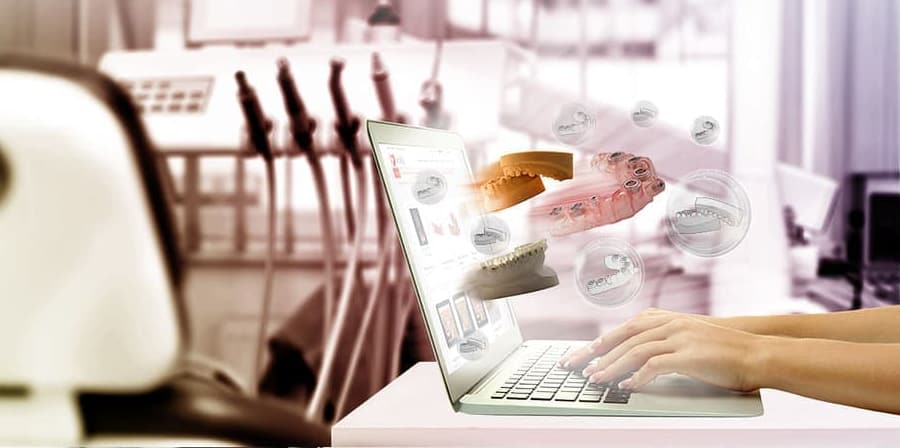
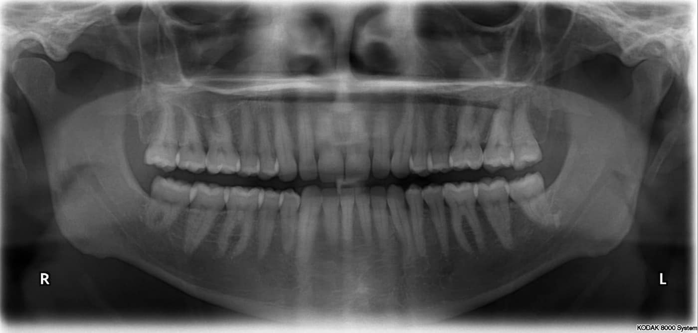
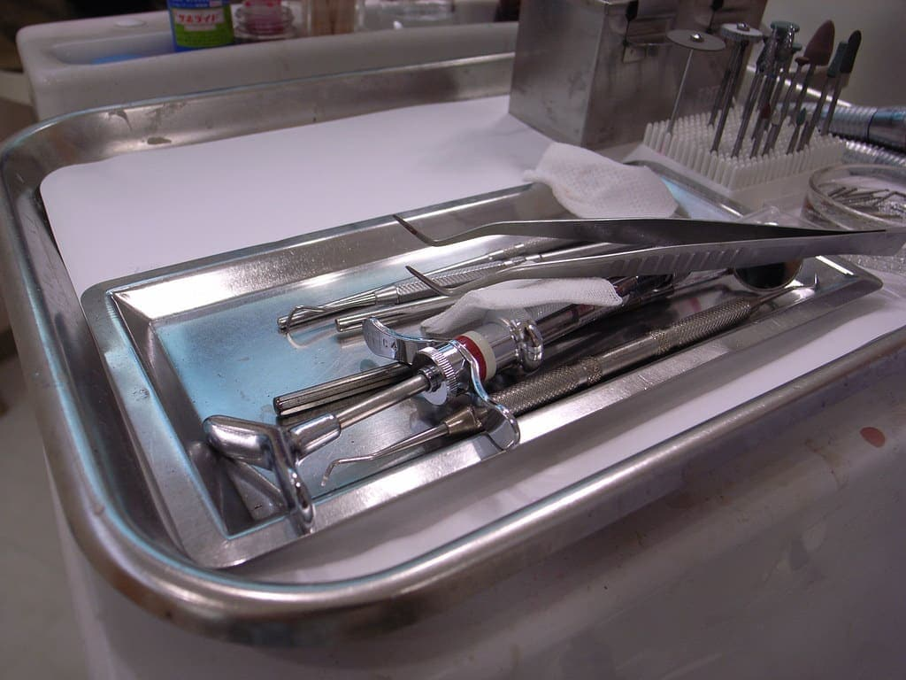

Escaneamento 3D
O scanner mapeia seus dentes em minutos, sem massa na boca.
Ortodontia digital de precisão

Escaneamento 3D sem moldes de silicone, visualização do planejamento antes de começar e acompanhamento com alinhadores transparentes ou aparelho fixo.
Tecnologia
Mais conforto na consulta e mais precisão em cada etapa.

O scanner mapeia seus dentes em minutos, sem massa na boca.

Você visualiza as etapas previstas do tratamento ainda na primeira fase.

Radiografia panorâmica digital com menor exposição.
Simulação ilustrativa
Arraste para ver, de forma simplificada, como o planejamento digital organiza o movimento de cada dente ao longo do tratamento.
Ilustração genérica. Cada caso tem planejamento, duração e resultado próprios, definidos após avaliação.
Tratamentos
Placas removíveis, praticamente invisíveis, trocadas em etapas definidas pelo planejamento digital. Você remove para comer e escovar.
Braquetes metálicos ou estéticos, com fios de última geração. Indicado também para casos mais complexos.
Acompanhamento do crescimento para orientar a posição dos dentes e dos ossos na fase certa.
Sua jornada

Agendamento
Inclui exame clínico e escaneamento 3D.